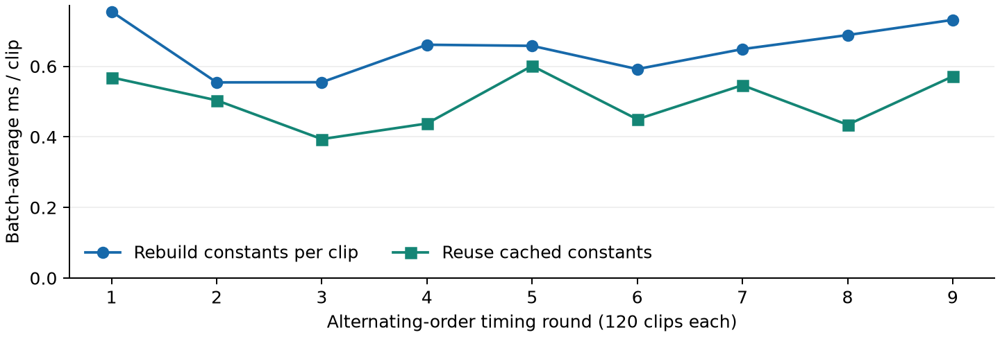

Project overview
This project studies how digital signal processing before a neural network can make keyword spotting more efficient. The task has ten commands, unknown speech and silence. The research question is which conditioning, time-frequency features and model structure retain useful speech information at the lowest total processing cost. The target design follows TI's DSCNN example; MATLAB provides an inspectable prototype. This update reports completed code and measurements for Project Feedback Two, together with the remaining work.
Background and method
MFCCs summarize the speech spectral envelope using short-time analysis, a perceptual Mel filterbank, logarithmic compression and a cosine transform [1,2]. Depthwise-separable convolutions offer a compact downstream classifier [3]. Robust compression such as PCEN motivates later noise experiments [4]. The design must account for both feature extraction and inference, because reducing model size alone does not remove preprocessing cost.
The reference accepts 16 kHz mono audio adapted to 16,000 samples. A symmetric 480-sample Hamming window and 320-sample hop give 49 complete frames. A 512-point FFT feeds 40 triangular Mel filters spanning 20 Hz to Nyquist. Natural-log compression with a 1e-10 floor and orthonormal DCT-II retain c0-c9, giving a 49-by-10 map. TI [5] specifies the shape; numerical equivalence to its SDK remains to be established.
Completed implementation and data
The repository now contains independently inspectable MATLAB stages, a real yes-recording walkthrough, intermediate arrays, float32 tensor export, and configurable PlotNeuralNet architecture figures. Earlier frozen-reference regression evidence covers 53 probes. The model diagram documents geometry; trained DSCNN weights are still pending.
Twelve licensed archives provide 720 training and 240 test examples with source and SHA-256 manifests. The existing speech split audit found zero speaker overlap; background source recordings are separated by split. Re-auditing durations found 84 short clips and 876 clips of 16,000 samples. The new adapter right-pads short recordings before processing, preserving the distributed source files. This corrects the previous website claim that every raw recording contained exactly one second.
New experiment: equivalent cached MFCC
The implementation precomputes the Hamming window, Mel weights and DCT basis in an explicit configuration-specific plan. A feature-only kernel reuses those constants. Its output was compared with the original modular frontend on all 960 published recordings after identical duration adaptation. All maps matched exactly. Five additional probes cover zero, impulse, sinusoid, random noise and near-zero input; malformed inputs are rejected and a rebuilt 13-coefficient configuration also matches.
The timing comparison uses the same feature-only kernel in both paths: one rebuilds the plan per clip, the other reuses it. Both paths are warmed up; nine rounds alternate execution order over 120 evenly spaced manifest entries. Reading, hashing, padding, plots and classification are excluded. All per-round measurements and input indices are published. The host is an Intel Core i7-11800H running MATLAB R2026a Update 4 with default threading.
Median batch-average time falls from 0.658 to 0.504 ms per clip: 1.31x speedup, or 23.5% less time. Setup separately takes a median 0.070 ms. Cached double-precision constants occupy 89,280 bytes, excluding scratch arrays, FFT internals and object overhead. Thus caching has a storage cost; sparse filters and constant placement need evaluation before embedded deployment.
| Measure | Observed result |
|---|---|
| Exact real-audio MFCC matches | 960 / 960; maximum error 0 |
| Uncached / cached median | 0.658 / 0.504 ms per clip |
| Ratio of medians | 1.31x; 23.5% lower time |
| Constant numeric payload | 89,280 bytes (double precision) |

Earlier recognition results and limitations
The earlier fixed-subset 5-NN diagnostic achieved 39.17% clean accuracy; cepstral mean normalization reached 47.08% with the same 490-element feature map. The classifier used 90 summary values (mean, standard deviation and seven temporal bins), not the raw map. Clean-trained variants fell to 8.33-10.42% under deterministic 10 dB Gaussian noise; unknown recall was 0-5%. These motivate noise-aware training and rejection.
Those exploratory comparisons exposed the small test subset during development, so they cannot establish an unbiased final model ranking. New model selection will use official validation data. The caching result proves numerical preservation and PC timing only; it adds no new recognition score. Shared-desktop timing varies, and exact parity on this corpus does not prove cross-platform parity or energy savings.
Remaining work and requested feedback
Weeks 10-11: benchmark compact constant storage, implement a train/validation/test pipeline, and compare the same small DSCNN with baseline MFCC and CMN under matched noise augmentation. Weeks 12-13: repeat feasible comparisons with three seeds, report accuracy and memory alongside frontend cost, and finish documentation. INT8 golden tensors and TI compilation follow only after the floating-point model is validated; hardware timing and energy are stretch goals.
Feedback is requested on whether the bounded MFCC-versus-CMN comparison provides sufficient scope, whether cached dense filters should be replaced by sparse accumulation before model training, and which unknown-rejection metrics are most useful. The immediate deliverable is a reproducible MATLAB study with traceable results. This staged scope keeps the project feasible without presenting a planned deployment as completed work.
Assistance disclosure
OpenAI Codex assisted with code, experiment orchestration, documentation and formatting. The reported new measurements were produced by executing MATLAB. Source code, configurations and results are retained for inspection; the student remains responsible for reviewing the material and complying with course rules before submission.
Reproduce and inspect
addpath(fullfile('research','ti_gsc_matlab_mvp'))
benchmark_cached_frontendRun from the repository root. The checked-in archives supply the audio; no private dataset path is required.
References
[1] S. B. Davis and P. Mermelstein, "Comparison of Parametric Representations for Monosyllabic Word Recognition in Continuously Spoken Sentences," IEEE TASSP, 1980. doi:10.1109/TASSP.1980.1163420.
[2] T. Giannakopoulos and A. Pikrakis, Introduction to Audio Analysis: A MATLAB Approach, Chapter 4, 2014. doi:10.1016/B978-0-08-099388-1.00004-2.
[3] P. M. Sorensen, B. Epp and T. May, "A Depthwise Separable Convolutional Neural Network for Keyword Spotting on an Embedded System," EURASIP JASMP, 2020. doi:10.1186/s13636-020-00176-2.
[4] Y. Wang et al., "Trainable Frontend for Robust and Far-Field Keyword Spotting," ICASSP, 2017. doi:10.1109/ICASSP.2017.7953242.
[5] Texas Instruments, "Google Speech Command Recognition," Tiny ML Tensorlab 1.4.0, sections 7.8.30.6-7. Accessed 9 October 2026; linked on the project page.